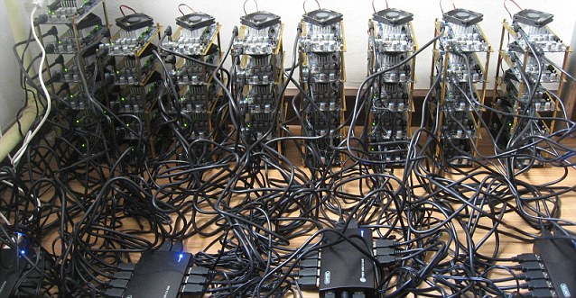

itcoin
A quick introduction
28/04/2014 - Víctor Mora Afonso
Layout
- Introduction
- How it works
- Network simulator
Decentralized digital currency established in 2009 which allows people to anonymously exchange amounts of bitcoins without the need of a central authority in charge of transactions.
Decentralized
Anonymous
Can't rollback
No mandatory transaction fees
21 million bitcoins
12,698,325
1 = 456.7
[blockexplorer]What can we buy?
- Food
- Services
- Plane tickets (cheapair)
- coinmap.org
Under the hood
Cryptographic tools
- SHA-256
- ECDSA
- Merkle trees
Transactions
- Inputs
- Outputs
- Scripting system
- Broadcast to the network
- Confirmed by peers
Double spending
Blocks
Sets of transactions that are appended to a block chain. To be added to this chain, a block needs to be valid.
Block validation
- All transactions must be valid
- Block header hash lower than network difficulty
Block mining
- Header nonce parameter
- Winning the lottery
- Reward as proof of work
- Reward halfed every 210,000 blocks
Difficulty
- Target block hashes must be lower than
- Network parameter adjusted periodically
- 1 Block every 10 minutes rate
Block chain
- Shared database containing all transactions
- Every peer has a copy
- Transactions are valid when in block chain
- The deeper, the more difficult to modify
- Avoid double spending
Global Bitcoin computing power now 256 times faster than top 500 supercomputers, combined [forbes]
Is it secure?
It is unless someone has the 51% computing power of the network. It becomes more unpractical as the number of honest nodes grows.- Double spending
- Block certain transactions
- Stop being decentralized
Other attacks
- Double spending on fast payments
- Network analysis to unveil anonymity
- DOS attacks to certain peers
- Selfish attack
Bitcoin network simulator